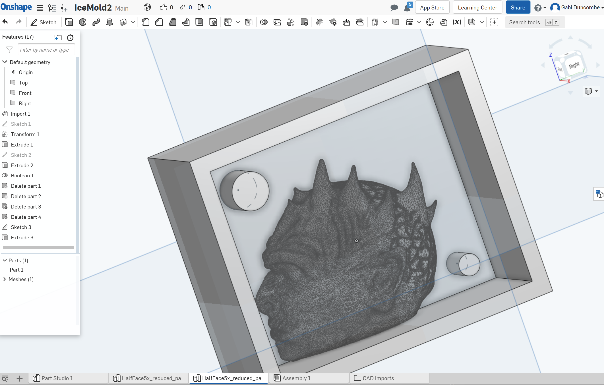

Obviously, I was psyched to watch the Game of Thrones series finale this weekend, so I thought it would be fun to create a themed project: a Night King ice cube mold (winter is coming!).
Here's the link to the Onshape file and the other source files.
I purchased the food-safe Smooth-Sil 940 to make the ice mold, but first I had to start with the mold for the mold. I decided to 3D print it.
I downloaded a Night King Bust from Thingaverse, which provided a great mesh to start with.
I brought the 3D file into Rhino, where I started designing the mold.
I decided that due to the horns on top of his head, I had the best chance of getting the ice cubes out intact by splitting the mold along the middle of his face. Not ideal from an aesthetic perspective, but I think any other configuration would have had issues with the draft angle on the horns. The horns proved to be a bit tricky, regardless, but I think this was the optimal solution.
I sliced the 3D mesh along the middle to create one half of the Night King's face.
I started designing the box around it but I decided to switch to Onshape where I could quickly dimension all the different attributes.
I exported the half-face from Rhino as a .STL and imported it into Onshape, where I created all the rest of the components around it. The box creation was pretty easy, though it did take a while to wrap my brain around what needed to be created... it was hard thinking about the inverse of an inverse.

It was ready to 3D print!
But there was a small problem. For some reason that I still don't totally understand, Cura was not reading the mesh correctly and was creating a small gap. I was worried that the Smooth-Sil 940 would get into the gap and mess up the mold.
I'm tried running the mesh through a repair tool I downloaded called Slic3r, where it found a bunch of errors. This alleviated the problem slightly but didn't solve it completely.
But I decided to give it a shot, since it seemed like the gap would be quite small.
Five hours later, I had a mold! I printed a second one for good measure, and in case anything went wrong.
Then it was time to pour the silicone! This mixture called for a ratio of 10:1. I ended up using 100g:10g for each of the molds.
This part of the process was strangely satisfying.
Then, I waited 24 hours for the silicone to cure!
I used a butter knife to pry it out but was it was getting stuck around the horns, so I had to rip apart the 3D-printed molds to slide the silicone mold out. I kind of anticipated that this would happen so it didn't feel too alarming.
And the small gap I was worried about didn't seem to cause any issues.
Molds fit together great! They look pretty fleshy and disturbing though.
The aftermath:
Then it was time to cast some ice cubes!
While the mold was pretty tight, I wanted to make sure water didn't leak out, so I used rubber bands to get them extra snug.
I filled with water and put in the freezer, along with a bit of water in a cup that I was using to test when the water had turned to ice (since I didn't want to mess up the ice cubes by taking them out too early).
They came out great!
I ran a few more over the next few hours.
Plus I got out some GoT White Walker-themed Johnny Walker whisky to enjoy with the ice cubes :)
What a great way to end Game of Thrones!